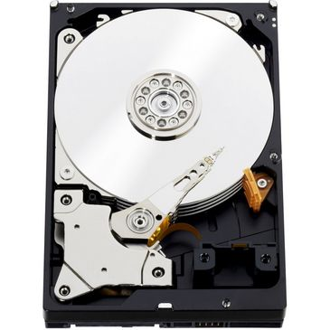
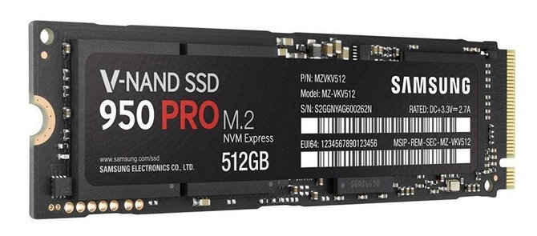
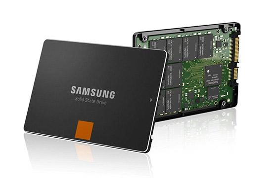

TYPES
Rotational Storage
- Old technology. Invented in 1954 by IBM.
- Stores data on magnetic platters or disks.
- The platters or disks must be spun at high speeds and read using an actuator arm seeking over the spinning disks.
- Inefficient in modern computing in regards to power use and data-transfer speed in comparison to Solid State Drives.
- Very fragile and susceptible to magnetic damage

Solid State Storage
- Solid State Disks have existed since the 1970s.
- SSDs have no moving parts.
- SSDs are much faster than rotational hard disks because data does not get fragmented and do not rely on spinning disks and seeking with an actuator arm to read data. Data can be pulled from a sector at any time with very little latency.
- SSDs can withstand a harsher environment, are not as vulnerable to magnetic fields, and are very resistant to shock, vibration, and movement.
- Some downsides of SSDs are that data stored on SSDs that are not used for long periods of time (up to 10 years) can be lost; SSDs are not recommended for archival storage. HDDs can retain their data for a very long amount of time if stored in a climate controlled and clean environment.
- The transistors used in SSDs can only be written to a finite amount of times. SSDs are not recommended for constant writing of data.

